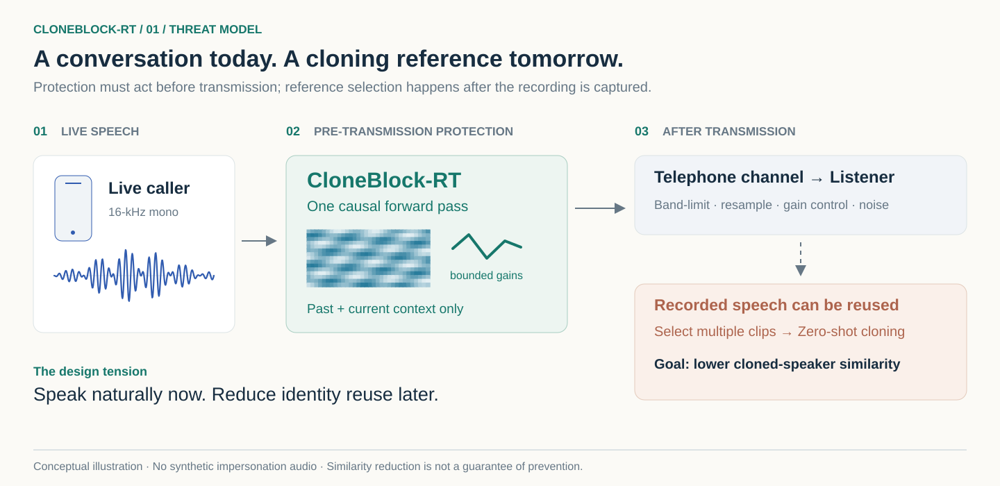
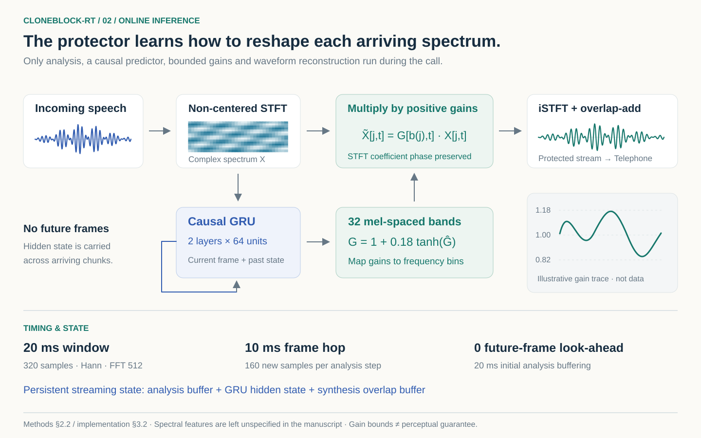
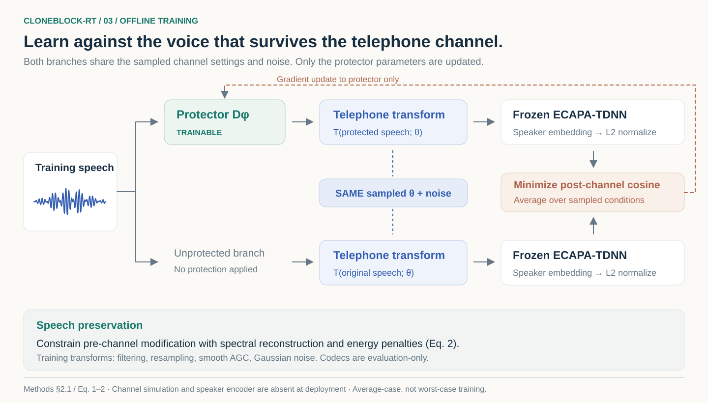
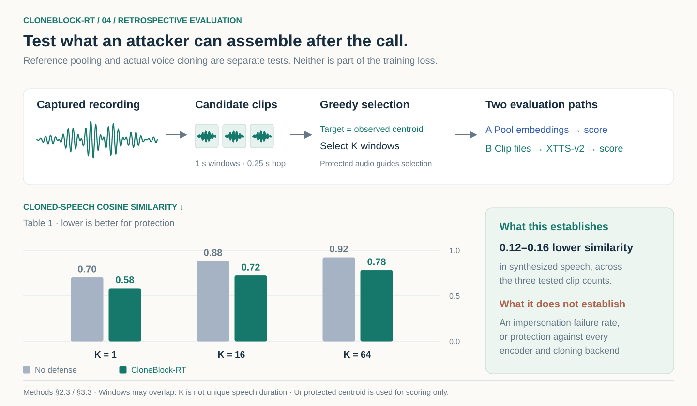

More than fast inference
Protection should survive telephone processing, not merely change the pre-transmission signal.
Research manuscript · Streaming speech privacy
Streaming Voice Protection Against Zero-Shot Voice Cloning in Live Telephony
Protect speech as it arrives.
Not after the recording becomes a clone.
Xi’an Jiaotong-Liverpool University, Suzhou, China · Author affiliation as in the manuscript
Real-time privacy protection against voice cloning through zero-shot text-to-speech (TTS): preserve speech content during a call while reducing the recording’s usefulness as an unauthorized voice reference.
00 / THE TTS CONNECTION
TTS turns text into speech. Reference-conditioned TTS can also use a short recording to generate new content in a target speaker’s voice—the form of voice cloning studied here. It can enable consensual personalized speech; our research addresses unauthorized reuse of recordings.
FROM THE REAL-WORLD RISK TO THE TTS TASK
New text + reference recording of a target speaker → new speech in that speaker’s voice
CloneBlock-RT protects the upstream reference recording. It is neither a new TTS generator nor a detector applied to already-generated fake speech.
In this setup, the TTS model is not fine-tuned for the target speaker; reference audio conditions inference. Here, zero-shot does not mean that no reference recording is provided.
The paper supplies multiple clips from the same call to XTTS-v2 without target-speaker adaptation training. We therefore call this multi-reference zero-shot TTS: increasing the number of reference clips does not by itself establish a few-shot learning setup.
Few-shot TTS may describe adaptation from a small speaker-specific dataset or a particular in-context example protocol, depending on the work. This paper does not evaluate few-shot target-speaker adaptation. It is relevant to personalized TTS using limited reference audio, but its evaluated setting remains zero-shot / multi-reference zero-shot TTS.
Terminology sources: XTTS · Interspeech 2024 · XTTS single- and multi-reference inference documentation
01 / THE PROBLEM
An attacker can retain a call, then choose and combine clips for zero-shot voice cloning. The protector must act in real time, before it knows which segments will later be selected.

Protection should survive telephone processing, not merely change the pre-transmission signal.
A call supplies multiple, potentially overlapping windows. One-clip results do not establish protection under multi-reference collection.
Alongside embedding pooling, XTTS-v2 synthesis tests whether the reduction persists in cloned speech.
02 / ONLINE PROTECTION
Rather than repeat a fixed perturbation, the causal predictor uses current and past speech context to produce 32 band gains, modify complex STFT coefficients, and reconstruct a protected waveform.

Gb,t = 1 + 0.18 tanh(Ĝb,t)
Gains lie in [0.82, 1.18]. This bounds per-coefficient magnitude modulation; speech utility must still be measured separately.
16-kHz mono, a 20-ms Hann window, a 10-ms hop and a 512-point FFT. Analysis initially buffers 20 ms; the predictor has no future-frame look-ahead.
Analysis buffering, GRU hidden state and synthesis overlap state persist across chunks.
03 / ARCHITECTURE & OFFLINE TRAINING
CloneBlock-RT contains a trainable causal gain predictor within Dφ. It learns frame-wise spectral adjustments that lower post-telephone speaker similarity while constraining distortion. Parameters are optimized offline; a live call uses a single forward pass without parameter updates.
INPUT → LEARNING → OUTPUT
The system accepts 16-kHz mono speech x. After non-centered STFT analysis, the causal predictor uses present and past context. Two GRU layers with 64 units each feed a head producing 32 frame-wise gains for mel-spaced bands over 0–8 kHz.
After tanh bounding, gains are mapped to frequency bins and multiplied with the complex spectrum. iSTFT and overlap-add reconstruct x̃. The head predicts gains—not text, speaker labels, or cloned speech.
Input-feature boundary: the manuscript does not specify whether the GRU receives magnitudes, log spectra, or other features, nor its input dimension.
DATA & OPTIMIZATION · §3.1–3.2
The 30-second pseudo-calls and 96 windows per session belong to evaluation, not training batches. LibriSpeech supplies evaluation texts and utility-test speech, not the reported protector training set.
| Component | Parameter updates | Role |
|---|---|---|
| Protector: GRU + gain head | Yes; the learned module | Predict bounded contextual gains; retained at deployment |
| STFT / iSTFT / overlap-add | No; signal processing | Spectral analysis and waveform reconstruction; retained at deployment |
| Matched telephone transform T(·; θ) | Sampled conditions, not a learned channel network | Simulate transmission and pass gradients during training |
| ECAPA-TDNN | No; pretrained weights frozen | SpeechBrain spkrec-ecapa-voxceleb supplies training and evaluation embeddings |
| XTTS-v2 | Not part of protector training | Synthesize cloned speech afterward to evaluate downstream protection |

1 / IDENTITY · POST-CHANNEL
Lspk = Eθ[cos(h(T(x; θ)), h(T(Dφ(x); θ)))]
Minimize identity similarity between original and protected branches after transmission. Average scalar losses over sampled channels—not waveforms or embeddings. The objective specifies no target speaker to imitate.
2 / RECONSTRUCTION · PRE-CHANNEL
Lrec = Σr∈R ‖|STFTr(x)| − |STFTr(x̃)|‖1
Constrain magnitude-spectrum differences at multiple STFT resolutions to limit excessive structural changes. The manuscript does not enumerate the window, hop, and FFT settings in R.
3 / ENERGY · AS DEFINED IN EQ. 2
Lenergy = |RMS(x̃) − RMS(x)|
Constrain the change in overall RMS amplitude. Both preservation terms are computed before telephone processing, so modifications removed by the channel are still penalized.
Training randomizes band-limiting, resampling, smooth AGC and Gaussian noise, shared across both branches. The objective minimizes expected cosine similarity over sampled conditions—not a worst-case guarantee for every channel.
α is selected from {0.10, 0.14, 0.18, 0.22} by minimizing validation similarity subject to channel-free STOI ≥ 0.98, yielding α = 0.18. Opus and G.711 are evaluation-only, not training transforms.
Beyond the third-loss discrepancy, reproduction needs the GRU input features and normalization, gain-head layers and band interpolation, the multi-resolution STFT set R, channel sampling ranges and distributions, exact speaker IDs, parameter initialization, and hidden-state handling during chunk training. The paper establishes that the protector is trained, but does not uniquely specify the full implementation.
Source: supplied manuscript §§2.1–2.3 and §§3.1–3.2 (pages 2–4). Multi-reference selection and XTTS synthesis are evaluation procedures, not training-loss components.
04 / SESSION-LEVEL EVALUATION
Twenty held-out VCTK speakers yield 100 pseudo-calls of 30 seconds, with 96 candidate windows per session. Greedy selection targets the captured audio’s own observed centroid; the unprotected session centroid is used only for scoring.

05 / MEASURED EVIDENCE
All values below come from the supplied manuscript, not an inference run on this website. Similarity reduction is not an impersonation success-rate measurement.
| System | Reference embeddings | XTTS cloned output | ||||
|---|---|---|---|---|---|---|
| K=1 | K=16 | Mean over K | K=1 | K=16 | K=64 | |
| No defense | 0.7202 | 0.9861 | 0.8830 | 0.70 | 0.88 | 0.92 |
| ClearMask | 0.6593 | 0.9326 | 0.8558 | 0.62 | 0.79 | 0.85 |
| Enkidu | 0.6433 | 0.9018 | 0.8519 | 0.57 | 0.74 | 0.81 |
| CloneBlock-RT | 0.6733 | 0.9203 | 0.8245 | 0.58 | 0.72 | 0.78 |
Bold marks column minima. Reference mean equally weights K={1,2,4,8,16}, not an integrated area; reference K=1 values were reconstructed from rounded summaries in the paper. CloneBlock-RT does not outperform Enkidu at every K or on every metric.
| Condition | System | WER (%) ↓ | STOI ↑ |
|---|---|---|---|
| None | No defense | 52.84 ± 24.88 | 1.0000 ± 0.0000 |
| CloneBlock-RT | 52.14 ± 23.81 | 0.9887 ± 0.0047 | |
| Opus 16 kb/s | No defense | 54.27 ± 25.53 | 1.0000 ± 0.0000 |
| CloneBlock-RT | 54.68 ± 25.89 | 0.9242 ± 0.0410 | |
| G.711 | No defense | 53.76 ± 24.52 | 1.0000 ± 0.0000 |
| CloneBlock-RT | 53.09 ± 24.47 | 0.9823 ± 0.0119 |
WER changes remain within 0.70 percentage points on an already high-error ASR pipeline, not evidence of recognition equivalence. STOI drops most under Opus. Unit STOI baselines follow from condition-matched unprotected references—not distortion-free transmission.
STREAMING EXECUTION
GPU: NVIDIA A100, FP32, batch one. Timing includes analysis, gain prediction, synthesis and GPU transfers; excludes codecs and file I/O. The manuscript does not specify the CPU model.
| Chunk | CPU RTF | GPU RTF |
|---|---|---|
| 20 ms | 0.036 | 0.019 |
| 40 ms | 0.025 | 0.013 |
06 / PAPER & FIGURES
The technical illustrations are standalone local SVG and high-resolution PNG files, not diagrams assembled in the webpage. This is a research explainer, not an online protection or cloning service.